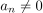
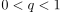
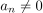
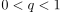
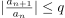
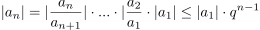
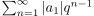

Quotientenkriterium für Konvergenz in Abhängigkeit vom Limes Superior
1. Satz
Sei  eine komplexe Reihe, s.d. für fast alle  gilt
Existiert , s.d. gilt
eine komplexe Reihe, s.d. für fast alle  gilt
Existiert , s.d. gilt
 lim ⊃ | {an+1}{an} |≤ q
,
so konvergiert absolute
lim ⊃ | {an+1}{an} |≤ q
,
so konvergiert absolute
2. Beweis
Sei o.B.d.A. und  für alle  .
Sonst lässt man endlich viele
.
Sonst lässt man endlich viele  weg (siehe: Rechenregeln für konvergente Reihen)
Dann folgt
weg (siehe: Rechenregeln für konvergente Reihen)
Dann folgt

1
Also ist  eine konvergente Majorante für , d.h. konvergiert